RACING-SHOOTER · ADMIN
Authoring tools and builds. Not linked from either game.
Authoring
Draw a course, set the land, surfaces, scatter and sky, drag components
onto the world, and preview it in the real engine. Save puts it straight
into the game — top of the picker, already selected. Open… lists your
saved tracks to edit again. Export the JSON into
dustline/src/data/tracks/ to ship it to everyone.
The reference circuit — 114 placed components across every category. Opens straight into the editor.
EDIT: HARBOUR POINTThe coastal circuit — sea, a harbour village, jetties and moored boats. The worked example of water, and of the settlement and marine component sets.
Builds
The game under active development. TypeScript, Rapier physics. Opens on
a track picker showing everything this browser can play, yours first;
?track=<id> or ?t=<packed> skips it and
goes straight to one.
The shipped game at the repository root. 18 worlds, vanilla JS, no build step.
noindex to stay out of search results — that is obscurity, not
access control. It is acceptable because every tool here is read-only
against the repository: the editor writes only to your own browser's
localStorage, so the worst a stranger can do is edit a track for themselves.
Nothing here can change what either game ships.
Component sets
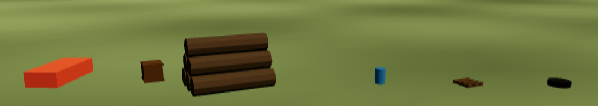
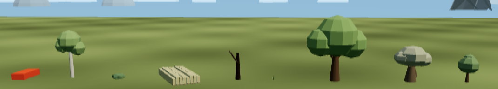
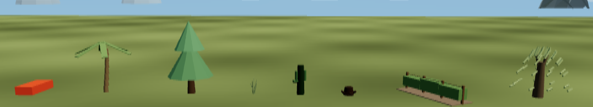
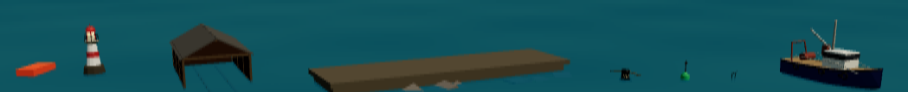
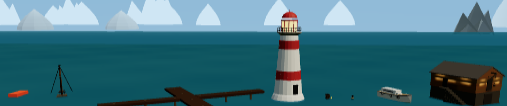
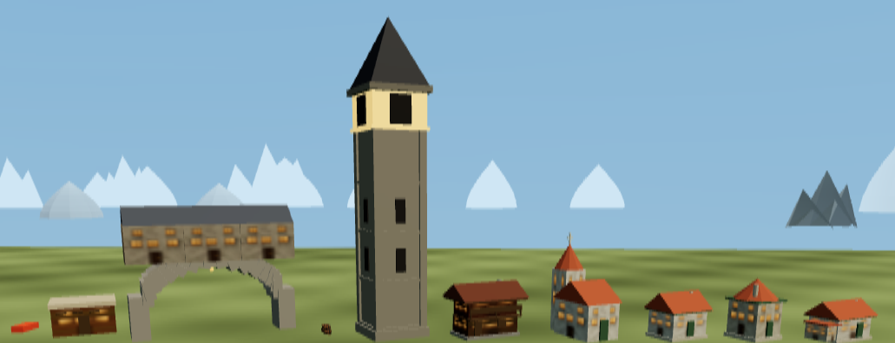
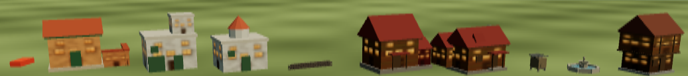
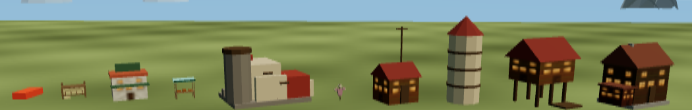
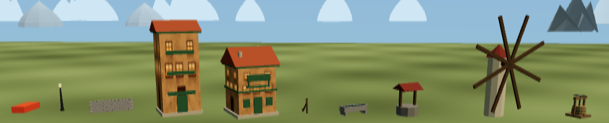
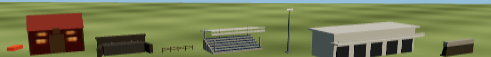
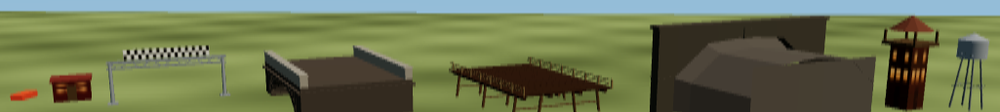
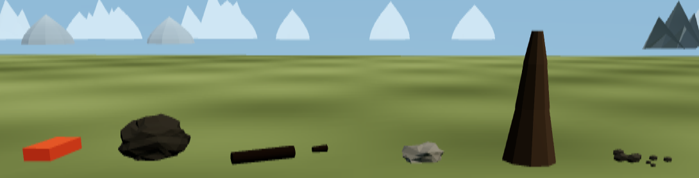
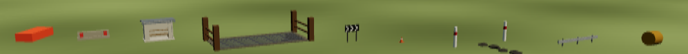
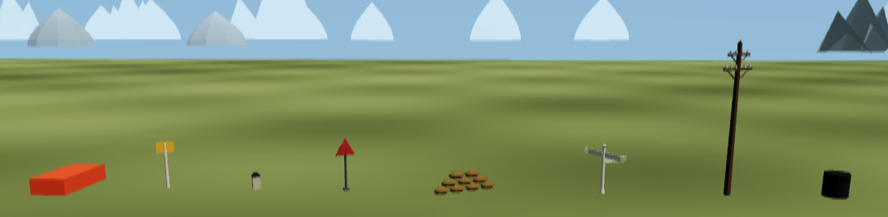
Harbour Point
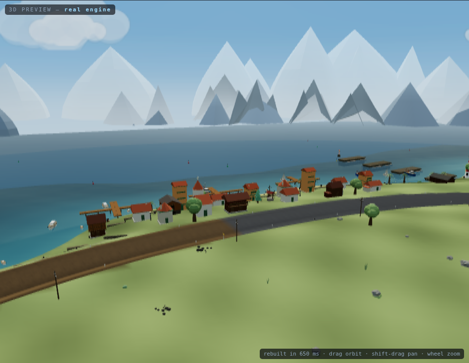
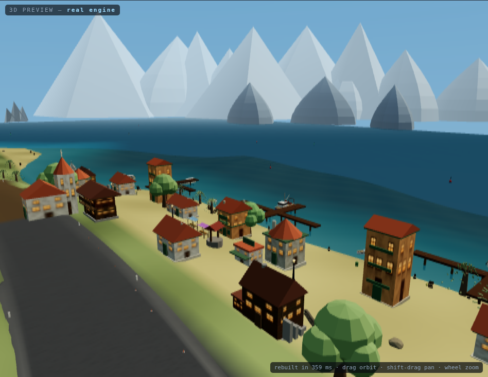
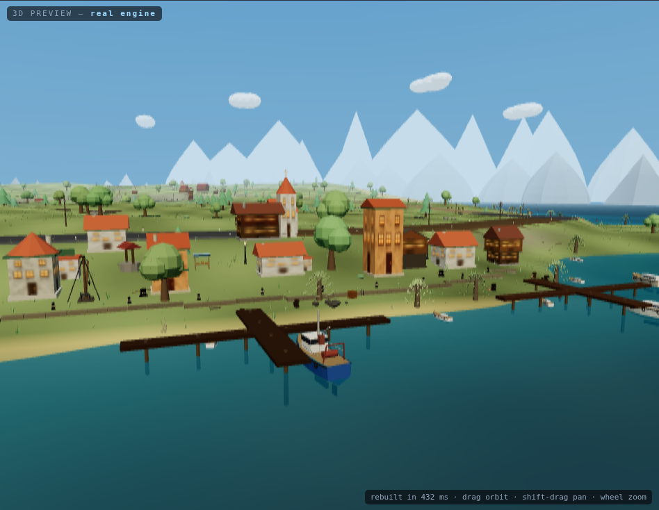
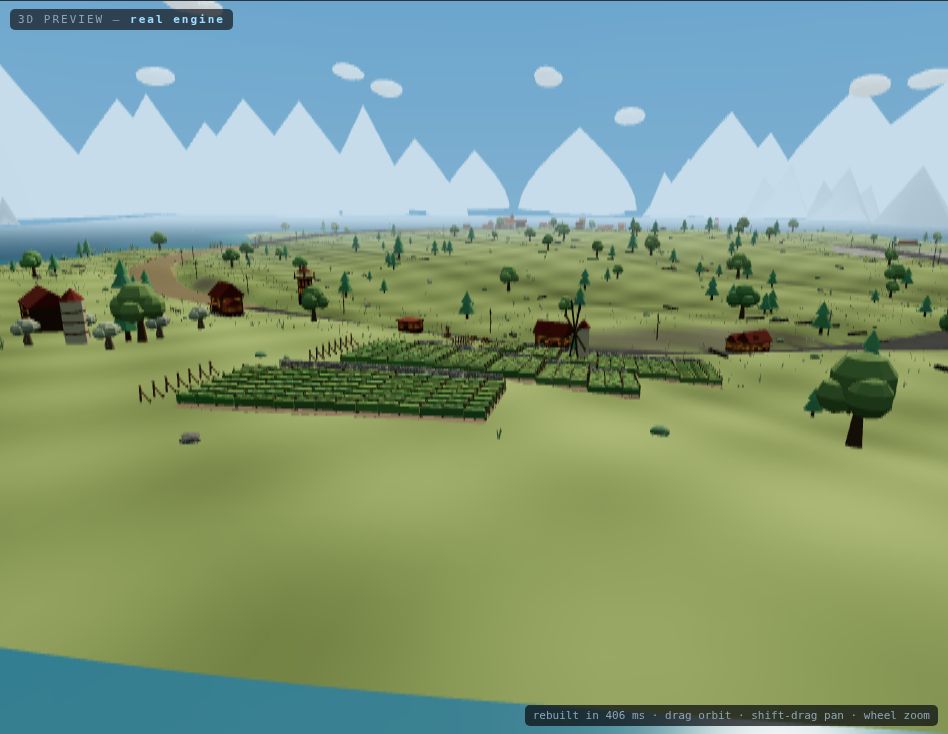